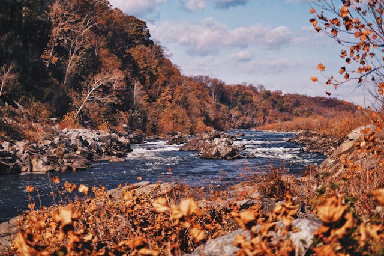

Welcome to my grate fall page
This was my very first trip outside of New York, and it turned out to be an unforgettable experience.I visited Great Falls in Virginia with my friends, and the moment we arrived, the sound of the rushing water filled the air.The view was breathtaking and the powerful waterfalls surrounded by rocks and green trees made me feel peaceful and amazed at the same time.We took a long walk along the trails, capturing pictures and enjoying the cool breeze. It was a great reminder of how beautiful nature can be when you step away from the busy city life.
Learn more about grate fall
Click icon below to visit my index page